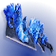
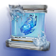
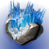

效果
| 名称 | 图标 | 说明 |
|---|---|---|
| 冰影碎片 | 冰影分支职业固有：碎裂一块冰影水晶或一名被冻结的敌人，或击杀受冰影减益（减速、冻结）影响的敌人，会生成一枚冰影碎片。 红血掉小型碎片；橙血、小头目、首领与守护者掉大型碎片。 拾取提供近战技能能量：小型 10%，大型 50%。破碎状态持续 20 秒，盟友能拿到使用者生成的每一份。 装备冰川收获、冷酷收割或构造收割时：小型碎片额外恢复 10 生命值并提供 1 层冰霜护甲；大型碎片恢复 20 生命值并提供 3 层。 | |
| 冰影水晶 | 可以生成在表面上的实心柱，生命值随体型而定，最长存在 15 秒。 生成时对 2.6 米内的敌人施加冻结（PvP 为 15 层减速，持续 1.5+0.5 秒）。 打空生命值即可摧毁，在 8 米半径内最多造成 158 [25] 伤害。 使用者对自己的水晶造成双倍伤害。 | |
| 冰霜护甲 | 每层提供 7% [2%] 伤害抗性，5 层时最高 31.25% [10%]。每 5 秒衰减 1 层。 超能期间每层提供的抗性会降低。 装备碎片「韵律」时上限提高到 7 层，最高抗性 50% [16%]，每层持续时间变为 6 秒。 | |
| 减速 | 被减速的敌人在移动与武器性能上受多项惩罚；层数攒到 100 层即冻结。 被减速的战斗人员移动速度降低 50%，精度下降。 被减速的守护者移动速度与跳跃高度各降 50%，无法使用移动技能，受到的退缩提高，武器属性也受惩罚。 武器属性惩罚：稳定性、操控性、填装速度与后坐方向降低 75%。惩罚在武器特性结算之后施加，施加前属性视为无上限——例如 160 填装速度会减 40，80 操控性会降到 20。 过载勇士受到任意层数减速时进入眩晕。 | |
| 冻结 | 被冻结的敌人被完全定身，无法射击、使用技能或移动。 它们受到特殊与威能武器的伤害提高 10%，受到电弧、烈日与虚空技能的伤害提高 5%，受到主武器的伤害降低 5% [60%]。 被冻结的红血、橙血与守护者另外承受 +120% 的基础与偃月近战伤害。 被冻结的敌人在受到伤害后碎裂，PvP 固定 200 伤害。 定身时长 6 [1.35 至 4.75] 秒；首领不受冻结阻碍，3 秒后自动碎裂。扎根的守护者可以立即施放超能挣脱。 短暂冻结：被其它守护者冻结持续 1.35 秒。长时间冻结：被战斗人员或冰影超能冻结持续 4.75 秒。 被冻结的守护者职业技能被替换为突围，可以用生命值换取挣脱持久冻结。漫游超能期间被冻结的守护者 1 秒后自动挣脱；一次性超能若在施放动画中被冻结则会被停用。 | |
| 碎裂 | 被冻结的敌人可以被伤害打碎裂，也可以由特定冰影星相直接引爆，最多造成 361 伤害。 不屈勇士受到碎裂伤害时进入眩晕。 |
碎片
| 碎片 | 图标 | 说明 | 属性变化 |
|---|---|---|---|
| 束缚 | 击杀被冻结的敌人生成一枚能量球，提供 2.5% 超能能量。 生成能量球后有 10 秒冷却。 | -10 超能 | |
| 锁链 | 冰霜护甲激活期间的击杀推进计数，满 100% 生成一枚小型冰影碎片。 红血 34% ｜ 橙血 67% ｜ 黄血 100%。 | +10 职业 | |
| 冰冷 | 冰影武器击杀推进计数，满 100% 生成一枚小型冰影碎片。 红血 34% ｜ 橙血 67% ｜ 黄血 100% ｜ 守护者 67%。 生成碎片后有数秒冷却，冷却期间的击杀不推进计数。 | — | |
| 传导 | 15 米内的冰影碎片在 1 秒延迟后被拉向使用者。 | +10 生命值 +10 超能 | |
| 耐久 | 减速减益与部分技能持续更久。 受影响的来源会在常规时长或层数旁用小字标出增量，例如 25 秒 → 25+5。 | +10 近战 | |
| 裂隙 | 碎裂敌人或摧毁水晶时额外造成一次伤害实例，在 10 [8] 米半径内最多造成 25 [9] 伤害。 衰减后最低仍有 15 [4] 伤害。 | — | |
| 脆弱 | 用近战伤害碎裂一名敌人时提供 1 层冰霜护甲。 | — | |
| 晶石 | 冻结一名敌人提供操控性加成与 +30 生命值，持续 11 秒。 | — | |
| 饥饿 | 冰影碎片提供的近战能量提高 60%。 与其它来源（例如渴望回响的满溢金库 +260%）相加。 | -20 近战 | |
| 刺激 | 造成充能近战伤害时补满所有武器并提供 +40 操控性，持续 5 秒。 增益持续时间即为冷却时间。 | +10 生命值 | |
| 折角 | 击杀受冰影效果影响的敌人，按等级提供职业技能能量。 T1 级战斗人员 9% ｜ T2 13% ｜ 守护者 15% ｜ T3 20% ｜ T4 30% ｜ 小头目 40% ｜ 首领 50%。 | — | |
| 裂解 | 主武器弹药的武器对冰影水晶伤害提高 100%，对被冻结的敌人伤害提高 50%。 包括战狮、零号修订、无魂者揭秘者，以及它们各自的开火模式。 | — | |
| 逆转 | 冰霜护甲激活期间，造成或受到物理近战伤害都会施加约 10 层减速。 偃月近战同样适用。 | — | |
| 韵律 | 强化冰霜护甲：上限提高到 7 层（伤害抗性 50% [16%?]），每层持续时间变为 6 秒。 | — | |
| 破碎 | 摧毁一块冰影水晶时，手雷基础充能速度额外 +500% [150%]，持续 6 秒，最长 11 秒。 | — | |
| 折磨 | 受到伤害时提供 7% 手雷技能能量；冰霜护甲激活期间提高到 12%。 两次回能之间有 1 秒冷却。 | -10 手雷 |
手雷技能
| 手雷 | 图标 | 说明 | 基础冷却 |
|---|---|---|---|
| 急冻手雷 | 中型弹道 ｜ 追踪器 直接命中敌人施加 50 层减速，持续 4+2 秒，并计为冰影手雷技能伤害。 撞地 0.8 秒后生成一枚追踪器，以 17 米/秒追踪 20 米内最近的敌人，持续 1 秒，追踪强度逐渐减弱。 追踪器到达敌人或到期时引爆，造成 20 [20] 伤害并冻结 3 [1.75] 米内的敌人。 若追踪器冻结了一名敌人，会再生成一枚瞄准另一名敌人，最多连锁 2 次。 冬日之触：追踪器每冻结一名敌人就复制一枚；连锁 1、2、3 次后引爆时分别生成小型、中型与大型冰影水晶。 | 基础冷却 175.6 秒 回复倍率 0.625× | |
| 暮域手雷 | 中型弹道 ｜ 持续伤害场域 接触时引爆，最多造成 20 [20] 伤害并施加 20 [10] 层减速（持续 2+2 秒），同时生成一片减速场域。 场域每 0.35 [0.3] 秒在 4 米半径内造成 1 伤害并施加 10 [5] 层减速（持续 2+2 秒），自身持续 7+2 秒。 冬日之触：场域半径提高 50% 至 6 米，接触时额外生成小型冰影水晶。 | 基础冷却 131.7 秒 回复倍率 0.875× | |
| 冰川手雷 | 中型弹道 接触时沿垂直于投掷方向的直线生成 5 块冰影水晶。 这些水晶被碎裂时最多造成 158 冰影手雷伤害，8 米内衰减至 66%。 冬日之触：改为呈七边形生成 7 块冰影水晶。 | 基础冷却 175.6 秒 回复倍率 0.625× | |
| 碎裂手雷 | 中型弹道 ｜ 粘附 附着到敌人身上，直接命中即施加冻结。 数秒后爆炸，最多造成约 325 伤害，并以 3 组、每组 3 枚呈 Y 形释放 9 枚追踪冰影弹片。 每枚弹片造成 216 伤害，可弹跳数次。 粘在已被冻结的敌人身上会瞬时爆炸，爆炸伤害提高 100%。 冬日之触：额外生成 9 枚弹片；直接命中被冻结的敌人时按帧率返还手雷技能能量——30 帧 42% ｜ 60 帧 30% ｜ 120 帧以上 28%。 | 基础冷却 105 秒 回复倍率 ? |
猎人
| 类别 | 名称 | 图标 | 说明 | 基础冷却 | 碎片槽位 |
|---|---|---|---|---|---|
| 近战技能 | 枯萎之刃 | 固有 2 次近战技能充能。快速抛出一枚冰影手里剑。 手里剑可以从表面反弹最多 3 次，或瞄准最多 4 名敌人，追踪 12 [8] 米内的目标。 命中造成 296 [72] 伤害并施加 60 [40] 层减速，持续 3.5+3.5 [1.5+0.5] 秒。 | 基础冷却 145.2 秒 回复倍率 0.8× | ||
| 超能技能 | 沉默狂啸 | 伤害抗性 90% [53%]。 沉默 ｜ 接触造成 338 [847] 伤害并冻结 8.5 米内的敌人。 暴风雪 ｜ 接触造成 338 [847] 伤害，并在引爆时生成一场冰影风暴。 冰影风暴持续 14+2 秒，每 0.1 [0.17] 秒在 5.5 米半径内造成 28 [14] 伤害并施加 20 层减速（持续 1 秒），风暴本身覆盖 6 秒。 对非首领的被冻结敌人伤害提高 300%。 | T4 级超能 基础冷却 455 秒 | ||
| 星相 | 冷酷收割 |  | 拾取小型冰影碎片恢复 10 生命值并提供 1 层冰霜护甲；大型碎片恢复更多并提供 3 层。 冰霜护甲激活期间，动能与冰影武器击杀推进计数，满 100% 时该次击杀触发冰影碎裂；护甲层数越高，每次击杀推进得越多。 受到伤害提供职业技能能量，每秒最多一次。 仅限熔炉竞技场：短时间内生成 6 份破碎后进入 10 秒冷却，期间收割类星相不再生成冰影碎片；计数与冷却在整个火力小队内共享。 | — | |
| 星相 | 破碎俯冲 | 按［空中移动］进行俯冲，最多造成 50 伤害，并碎裂 8.5 米半径内被冻结的敌人与冰影水晶。 对被冻结的敌人伤害提高到 180；碎裂一名被冻结的敌人额外造成 250 碎裂伤害，显示为黄色数字。 碎裂冰影水晶或被冻结的敌人提供满层冰霜护甲。 俯冲期间提供冰影碎裂伤害抗性与坠落伤害免疫。每次激活之间有 4 秒冷却。 | — | ||
| 星相 | 冬日之触 | 强化四种冰影手雷： 急冻手雷 ｜ 追踪器每冻结一名敌人就复制一枚；连锁 1、2、3 次后引爆时分别生成小型、中型与大型冰影水晶。 暮域手雷 ｜ 接触时生成小型冰影水晶，减速场域半径提高 50%。 冰川手雷 ｜ 水晶排布改为六边形，并额外生成 2 块大型冰影水晶。 碎裂手雷 ｜ 额外释放 9 枚弹片；直接命中被冻结的敌人返还约 30% 手雷技能能量。 | — | ||
| 星相 | 严冬帷幕 |  | 对一名敌人施加减速时，职业技能基础充能速度额外 +300% [150%]，持续 3 秒。 使用职业技能：对 9 [8] 米内的敌人施加 60 [40] 层减速，持续 8+4 [1.5+0.5] 秒，并对战斗人员提供 50% 伤害抗性约 4 秒。 | — |
泰坦
| 类别 | 名称 | 图标 | 说明 | 基础冷却 | 碎片槽位 |
|---|---|---|---|---|---|
| 近战技能 | 战栗打击 | 跃过空中，进行一次突进距离延长的近战攻击，接触时碎裂冰影水晶。未命中返还 80% [40%] 近战技能能量。 命中造成 511 [105] 接触伤害，强力击退敌人并施加 50 [40] 层减速。 命中会附着一枚延迟冰影爆炸物，1 秒后最多造成 219 爆炸伤害并施加 100 [40] 层减速，8 米内衰减至 20%。 伤害与爆炸都吃近战伤害提高；接触伤害非致命。被直接命中的守护者近战突进失效 0.5 秒。 | 基础冷却 146.3 秒 回复倍率 0.7× | ||
| 超能技能 | 冰川震击 | 伤害抗性 90% [47%]。基础持续 25 秒，或每秒消耗 4% 超能能量。期间跳跃高度提高，且寒冰断破没有冷却。 施放时冻结 8 [6] 米内的敌人；超能结束时提供 3 次近战技能充能。 激活期间以任何方式取得击杀都会生成能量球，每枚提供 7.15% 技能能量，每次施放最多 7 枚。 被冻结的敌人与冰影水晶接触时每 0.15 秒受到 300 冰影超能伤害，几乎立即碎裂。 所有冰影伤害（光能攻击与接触伤害除外）对被冻结的敌人提高 310%，计为超能伤害并显示为黄色数字。 光能攻击 ｜ 消耗 7.45% 超能能量。向前跃出，造成 1838 [210] 接触伤害并强力击退；命中附着延迟冰影爆炸物，1 秒后最多造成 897 爆炸伤害并施加约 100 层减速，8 米内衰减至 20%。接触伤害非致命。 重击 ｜ 消耗 7.45% 超能能量。猛击地面，造成 73 [50] 伤害并冻结 9 米范围，同时生成 3 道冰影水晶波形，每道由小型、中型与大型水晶组成。前方约 45° 锥形内的敌人最多受到 579 伤害，8 米内衰减至 0%。水晶最多造成 158 冰影超能伤害，可随 100 以上的超能属性与其它超能伤害提升缩放。 风暴怒吼（冰川咆哮）｜ 消耗 15% 超能能量，每次施放最多 5 次。行为与伤害同普通星相，但视为超能近战伤害。冰川震击对被冻结敌人的 310% 提高，与咆哮固有的对被冻结非首领 1.5 倍伤害相乘。冰川咆哮伤害还可以随 100 以上的超能属性、超能近战伤害增益（护甲匠、护盾粉碎、没有 B 计划）与超能伤害增益（合成感受器）缩放，这些增益彼此相乘，其中没有 B 计划与护甲匠／护盾粉碎相加。 合成感受器增益期间，冰川咆哮对被冻结敌人会失去泰坦固有的 1.2 倍近战伤害，只提供 +25% 而非预期的 50%。 | T2 级超能 基础冷却 556 秒 | ||
| 星相 | 寒冰断破 |  | 滑铲撞进冰影水晶与被冻结的敌人时，接触即碎裂。 被动把滑铲距离从 6.5 米提高到 11 米，延长滑铲后有 2 秒冷却。 滑铲会发射一道冰影波形，造成 18 伤害并碎裂冰影水晶与被冻结的敌人。 | — | |
| 星相 | 钻石长矛 | 取得 1 [3] 次冰影武器击杀、一次冰影技能击杀，或一次碎裂击杀，生成一支冰影长矛。 长矛是一次性武器，3 米内可拾取，最多持有 10 秒，在地面上最多停留 25 秒。 ［开火］投出长矛：冻结接触点 5 米内的敌人，直接接触时碎裂水晶，并造成 136 [45] 伤害。 ［近战］猛击：冻结 8 [6.75] 米内的敌人，最多造成 180 [90] 伤害，并为自己与附近盟友提供 2 层冰霜护甲。 钻石长矛伤害到冰影水晶时立即碎裂它们；其伤害视为普通冰影技能伤害，既非手雷也非近战。 生成长矛后有 7 [17] 秒冷却，之后才能再生成一支。 | — | ||
| 星相 | 风暴怒吼 | 额外提供一次近战技能充能。对被冻结的非首领敌人造成 1.5 倍伤害（若尼芙神燃烧之拳激活则不适用）。 滑铲时按［近战技能］进行上勾拳，造成 146 近战伤害，冻结附近的敌人，并在使用者前方呈 V 形生成 2 块小型、4 块中型与 2 块大型冰影水晶。上勾拳伤害随近战属性与近战伤害增益缩放。开火状态下无法在滑铲期间使用。 这些水晶造成 158 充能冰影近战伤害，8 米内衰减至 45%；伤害计为充能冰影近战伤害，正常随近战伤害增益缩放，但不随 100 以上的近战属性缩放。 冰川震击期间的风暴怒吼另有一套缩放，详见冰川震击一条。 | — | ||
| 星相 | 构造收割 | 拾取小型冰影碎片恢复 10 生命值并提供 1 层冰霜护甲；大型碎片恢复更多并提供 3 层。 冰霜护甲激活期间，动能与冰影武器击杀推进计数，满 100% 时该次击杀触发冰影碎裂；护甲层数越高，每次击杀推进得越多。 受到伤害提供近战技能能量，每秒最多一次。 仅限熔炉竞技场：短时间内生成 6 份破碎后进入 10 秒冷却，期间收割类星相不再生成冰影碎片；计数与冷却在整个火力小队内共享。 | — |
术士
| 类别 | 名称 | 图标 | 说明 | 基础冷却 | 碎片槽位 |
|---|---|---|---|---|---|
| 近战技能 | 半影冲击 | 发出一颗飞行 22 米后自动引爆的冻结弹体。 弹体接触时引爆，最多造成 240 [30] 伤害，并冻结引爆点 2.7 [2] 米内的敌人。 | 基础冷却 146.3 秒 回复倍率 0.8× | ||
| 超能技能 | 严冬之怒 | 伤害抗性 90% [51%]。基础持续 24.5 秒，或每秒消耗 4.08% 超能能量。滑翔变为无时长限制的专注滑翔。 光能攻击 ｜ 每次双重破碎消耗 4.5% 超能能量。一前一后释放两颗冻结追踪弹，每颗造成 11 接触伤害与最多 50 [33] 溅射伤害；对已被冻结的敌人伤害降低 90%。 重击 ｜ 不消耗超能能量。释放一道以 45 米/秒传播的冲击波，造成 45 伤害并使 30 米内的敌人强力踉跄。被冲击波扫到的冰影水晶与被冻结的敌人直接碎裂，造成 3453 碎裂伤害；战斗人员再额外吃一次 361 伤害，合计 3814。 | T2 级超能 基础冷却 556 秒 | ||
| 星相 | 凄凉观察者 | 装备时手雷基础冷却与回复倍率被设为冰川手雷的数值。 按住［手雷］把手雷技能转成冰影炮塔。 炮塔每 2 秒向 35 米内的敌人自动发射一轮 5 发追踪弹体（持续 0.7 秒），每次命中施加 20 [10] 层减速，持续 4.5+4.5 [2+1.75] 秒。 炮塔持续 25+5 秒，拥有 150 构造体生命值，开火前获得 67% 伤害抗性。 凄凉观察者伤害计为冰影手雷技能伤害。 | — | ||
| 星相 | 冰霜脉冲 | 冻结一名敌人提供 11% 职业技能能量。 施放职业技能：冻结 8.5 [5] 米内的敌人，并提供 +2.5 米近战突进距离，持续 1.2 秒。（PvP 中 5–8 米内的守护者改为受到 50 层减速。） 用冰霜脉冲冻结一名敌人提供 5 层冰霜护甲。 | — | ||
| 星相 | 冰川收获 | 拾取小型冰影碎片恢复 10 生命值并提供 1 层冰霜护甲；大型碎片恢复更多并提供 3 层。 冰霜护甲激活期间，动能与冰影武器击杀有几率让该次击杀触发冰影碎裂，几率随护甲层数提高：1 层约 10% ｜ 2 层约 15% ｜ 5 层约 50% ｜ 6 层约 85% ｜ 7 层 100%。 受到伤害提供手雷技能能量，每秒最多一次。 仅限熔炉竞技场：短时间内生成 6 份破碎后进入 10 秒冷却，期间收割类星相不再生成冰影碎片；计数与冷却在整个火力小队内共享。 | — | ||
| 星相 | 冰焰飞弹 | 碎裂一名被冻结的敌人会生成一枚追踪器，瞄准 12 米内最近的敌人。 追踪器到达敌人或到期时引爆，冻结 3 [1.75] 米内的敌人。 生成 7 [1] 枚追踪器后有 8 秒冷却。 | — |